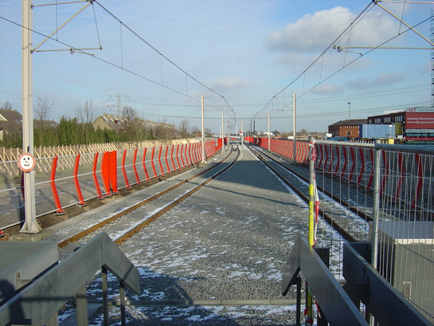
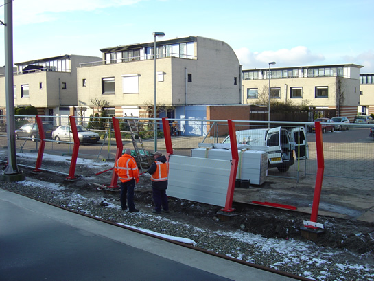

Divers metronieuws uit week 4...
- dinsdag 09 december 2008 10:30
- Geschreven door Joachim
Zondagavond omstreeks 23.50 uur, raakte tussen stations Wilhelminaplein en Rijnhaven een combinatie metrotreinen serie 5300 spanningloos. De passagiers werden uit de metrotreinen gehaald en zijn onder begeleiding van RET-personeel naar station Wilhelminaplein gebracht. De oorzaak van de storing zit vermoedelijk in een software-storing van het RIS(Rijtuig Informatie Systeem), de boordcomputer van de 'nieuwe' metrotreinen, series 5300 en 5400.
Spoorloper Schiedam
Woensdagmiddag werd er een spoorloper gesignaleerd op de keersporen van Schiedam Centrum. De persoon is in verwarde toestand van het spoor gehaald. Er deden zich geen ongelukken voor. De metrodienst liep als gevolg hiervan geen vertraging op.
Geluidschermen De Tochten
Rondom station De Tochten is enkele maanden geleden een begin gemaakt aan het plaatsen van geluidschermen. De bouwer, Strukton, is hiermee verder gegaan. Dit resulteert in een rood-grijs geheel. Op de plaatsen waar het geluidswerend materiaal nog niet aangebracht is, is tijdelijk gaas opgehangen, om te voorkomen dat er mensen de sporen op gaan. Aan de veiligheid is gedacht, er zijn namelijk nooddeuren in de geluidswand aangebracht. De geluidschermen lopen van station De Tochten tot het nieuwe Nesselandelijn-viaduct.
Foto's met dank aan: Theo Nobel.

Het nieuwe spoor naar Nesselande ligt er al, ook een deel van de geluidschermen staat inmiddels op zijn plek. Links is de nooddeur goed te zien.

Het geluidswerend materiaal is op enkele plaatsen al bevestigd.
Ontsporing Waalhaven
Nabij remise Waalhaven is in de nacht van woensdag op donderdag een metrotrein uit het spoor gelopen. Dit kwam doordat er een wissel niet veilig lag, maar er op zonderlinge wijze toch groene signalering in de sectie zat. De schade bleek achteraf mee te vallen, het rijtuig is weer in de baan getild. Er waren geen reizigers bij het incident betrokken, aangezien het een buitendienstwagen betrof.
5234
Bekend is geworden welk metrorijtuig zaterdagmiddag zijn pantograaf verspeelde, nabij Capelsebrug. Het betreft rijtuig 5234, inmiddels voorzien van een nieuwe pantograaf. Zaterdag werd over een lengte van 100 meter de rijdraad naar beneden getrokken, voor meer informatie en foto's kun je dit nieuwsitem bekijken.
Pantograafproblemen
Donderdagmorgen trad er tot tweemaal toe een pantograafstoring op bij enkele metrotreinen die Capelsebrug spoor 1 binnenreden. Bij beide gevallen wilde de pantograaf niet in de vergrendeling komen, oftewel niet neergaan. Dit heeft als gevolg dat er geen 'rijvoorwaarde' is, waardoor station Capelsebrug niet verlaten kan worden. Het metroverkeer werd in beide gevallen omgeleid via spoor 3, de vertragingen door uitval van diensten bedroegen ongeveer 10 minuten.
RET kán meer geld verdienen
De Ondernemingsraad van de RET heeft in een brief aan wethouder Hulman laten weten dat wanneer de zones voor tram, bus en metro worden verkleind, er meer geld binnen zal komen voor het vervoersbedrijf. Dit op basis van een onderzoek door onderzoeksbureau NEA.
De RET heeft sinds 2003 de zones niet verkleind, iets wat in de rest van het land wél het geval was. De opbrengsten zijn hierdoor niet gestegen. Als gevolg hiervan is de mogelijkheid aanwezig dat een verzelfstandiging van het openbaarvervoerbedrijf in gevaar komt.
De OR beseft dat de Rotterdammers zullen gaan klagen, omdat zij voor hun ritje met het openbaar vervoer meer geld moeten betalen. Toch wil de OR over de uitkomst van het onderzoek praten met wethouder Hulman van vervoer. Wordt vervolgd, zullen we maar zeggen.